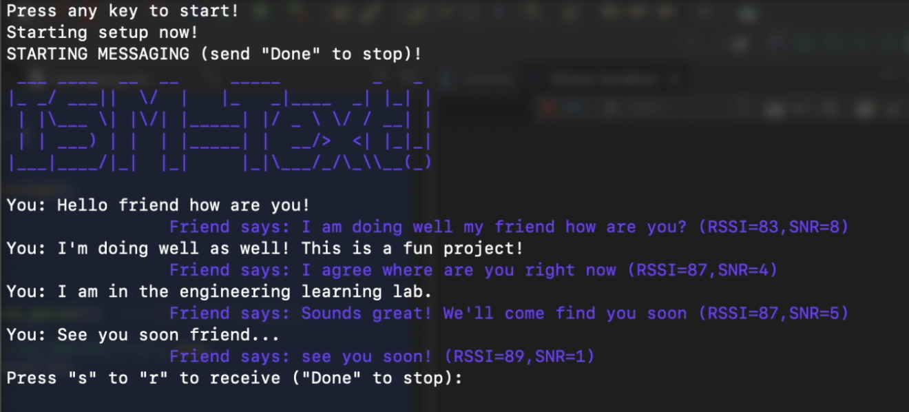

ISMText: Wireless Messaging using LoRa Radio Modules
Project Description
[Add project description here - ISMText is a long-range wireless messaging system built using LoRa (Long Range) radio modules and UART communication. The system enables text messaging over several kilometers without cellular infrastructure, making it ideal for remote areas, emergency communications, or situations where traditional networks are unavailable.]
System Architecture and Implementation
[Add technical details here - Include information about LoRa protocol implementation, UART interface design, message routing, power management, antenna design, range testing, and user interface development.]
Project Details
- Project Name: ISMText: Wireless Messaging System
- Project Type: Wireless Communication, Embedded Systems, IoT
- Project Timeline: [Add timeline here]
- Tools Used: LoRa modules, Microcontrollers, UART, Antenna design tools
- Key Features: Long-range communication, Low power operation, Mesh networking capability
- Applications: Emergency communications, Remote area messaging, IoT networks
Technical Implementation
[Add documentation here - Include system diagrams, PCB layouts, range test results, power consumption analysis, and user interface screenshots]
Hardware Design
[Add PCB layout, antenna design, component selection rationale]
Software Architecture
[Add protocol stack, message handling, user interface code]
Range Testing Results
[Add range test data, environmental factors, performance metrics]
System Demonstration
[Add photos/videos of the system in operation, field testing]